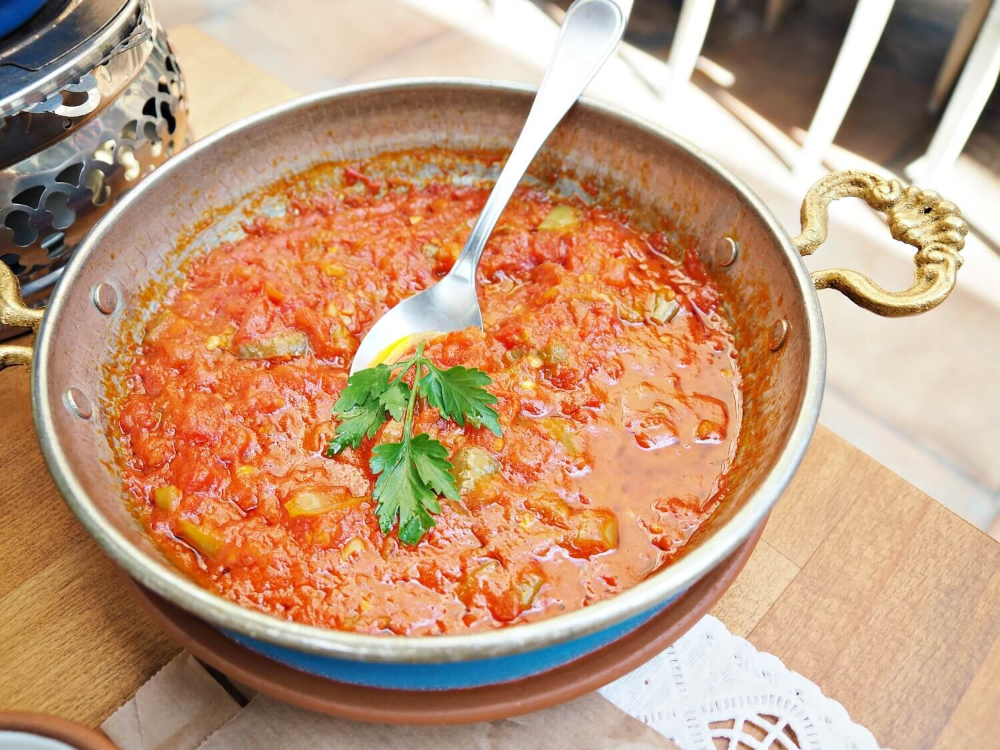

Menemen

Description
Menemen is one of the traditional and popular breakfast dishes in Turkey.
It is really delicious and easy to make. It is usually made with eggs but since I am vegan
I am gonna introduce a vegan recipe here!
Ingredients
- Pepper
- Olive oil.
- Tomato.
- Garlic.
- Salt.
- Black pepper powder.
- Paprika powder.
Steps
- Chop the peppers, tomatoes and garlics.
- Put some olive oil to the pan and heat it up.
- Put the peppers, tomatoes and garlics in to the pan.
- Saute them for around 5 mins.
- Put the spices and saute for 2 mins more.
- Enjoy it with some bread!